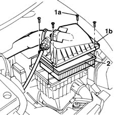
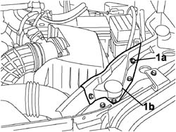
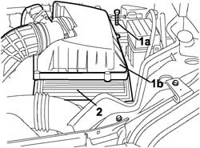
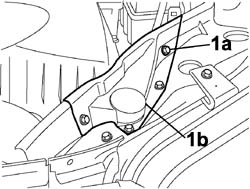
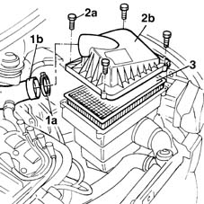

1048A14 AIR CLEANER FILTERING ELEMENT - REPLACE.
- Path
- Procedures > 10 ENGINE UNIT > 1048 ENGINE AIR SUPPLY CIRCUIT > 1048A VACUUM AIR CIRCUIT > 1048A14 AIR CLEANER FILTERING ELEMENT - REPLACE.
- Kind
- repair procedure (removal / refitting; the operation number is the code)
- Applies to
- all engines; all production periods
- Interactive page
- https://sloeber94.github.io/elrnDB-fMltpl/en/#/2891255
Applies to: engines: 1.6 16v; production: fino a 05/04
 Removing
Removing
 Refitting
RefittingOpen the bonnet lid.
1. Remove the band (1a) and disconnect the pipe (1b) connected to the throttle casing.
2. Undo the bolts (2a) fixing the filter casing cover (2b), then remove it.
3. Remove the filter element from the casing.

Applies to: engines: 1.6 16v; production: fino a 05/04
Refitting
RemovingCheck that the filter element is not damaged
Replace the filter element, if necessary
Position the filter element in the special housing.
Tighten the bolts fixing the filter casing cover
Connect the air pipe using a new band.
Close the bonnet.
Applies to: engines: 1.9 JTD 8V; production: fino a 05/04
Removing
RefittingOpen the bonnet lid.
1. Undo the bolts (1a) fixing the filter casing cover (1b), then remove it.
2. Remove the filter element from the casing.

Applies to: engines: 1.9 JTD 8V; production: fino a 05/04
Refitting
RemovingCheck that the filter element is not damaged
Replace the filter element, if necessary
Position the filter element in the special housing.
Tighten the bolts fixing the filter casing cover
Close the bonnet.
Applies to: engines: 1.9 JTD 8V; production: da 06/04
Removing
RefittingOpen the bonnet lid.
1. Undo the fixing bolts (1a) and remove the reinforcement (1b).

Applies to: engines: 1.9 JTD 8V; production: da 06/04
1. Undo the bolts (1a) fixing the air filter casing cover and lift it up.
2. Remove the filter element from the filter casing.

Applies to: engines: 1.9 JTD 8V; production: da 06/04
Refitting
RemovingFit the filter element in the filter casing.
Fit the filter casing cover and tighten the fixing bolts.
Position the reinforcement and tighten the fixing bolts.
Close the bonnet.
Applies to: engines: 1.6 16v; production: da 06/04
Removing
RefittingOpen the bonnet lid.
1. Undo the fixing bolts (1a) and remove the reinforcement (1b).

Applies to: engines: 1.6 16v; production: da 06/04
1. Remove the band (1a) and disconnect the pipe (1b) connected to the throttle casing.
2. Undo the bolts (2a) fixing the filter casing cover (2b) and lift it up.
3. Remove the filter element from the filter casing.

Applies to: engines: 1.6 16v; production: da 06/04
Refitting
RemovingFit the filter element in the filter casing.
Fit the filter casing cover and tighten the fixing bolts.
Position the reinforcement and tighten the fixing bolts.
Close the bonnet.
Topics that link to this page (27)
- B11 ENGINE STARTS WITH DIFFICULTY' / WHEN WARM
- B16 ENGINE STARTS WITH DIFFICULTY'
- D01 ENGINE NOT RUNNING SMOOTHLY / (HESISTANT)
- D05 ENGINE DOES NOT PRODUCE BEST PERFORMANCE
- D10 ENGINE IDLE IRREGULAR
- W01 HIGH CO EMISSIONS
- W02 CO EMISSIONS LOW, NOx EMISSIONS HIGH
- W11 EXCESSIVE EXHAUST FUMES'
- X01 EXCESSIVE FUEL CONSUMPTION
- 0010K20 20,000km service coupon, emission control version
- 0010K21 20,000km service for emission control versions with a/c
- 0010K40 40,000km service coupon, emission control versions
- 0010K48 40,000km service for emission control versions with a/c
- 0010K60 60,000km service coupon - emission control versions
- 0010K61 60000 service coupon, emission control version
- 0010K80 80,000km service coupon - emission control versions
- 0010K85 80,000km service for emission control versions with a/c
- 0010M01 100,000km service coupon, emission control versions
- 0010M08 1000,000km service for emission control versions with a/c
- 0010M20 120,000km service coupon, emission control versions
- 0010M21 120000 km service coupon for emission control versions with air conditioner
- 0010M40 140,000km service coupon - emission control versions
- 0010M41 140,000km service for emission control versions with a/c
- 0010M60 160,000km service coupon - emission control versions
- 0010M68 160,000km service for emission control versions with a/c
- 0010M80 180,000km service coupon - emission control versions
- 0010M81 180000 km service coupon foe emission control versions with air conditioner